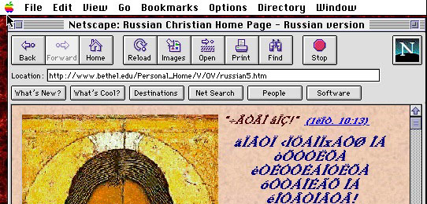
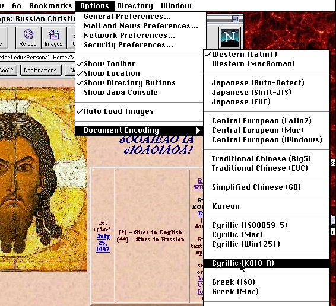
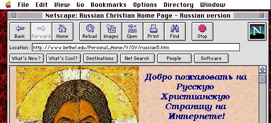

Page index / PC-MacRussian
Step Two
Step Two
Now you are done with the configuration of Netscape Navigator 3. Once you go to a Russian page like
, the page would not display Russian automatically.Go to the "Options" menu, then choose "Document Encoding" and select "Cyrillic (KOI8-R)" or "Cyrillic (Win1251)" or other choices, depending on the font format the original page was written in.

Then you will be able to read Russian on Netscape Navigator 3.

If there is still problem, please let me know.
Configuration of Internet Explorer 3